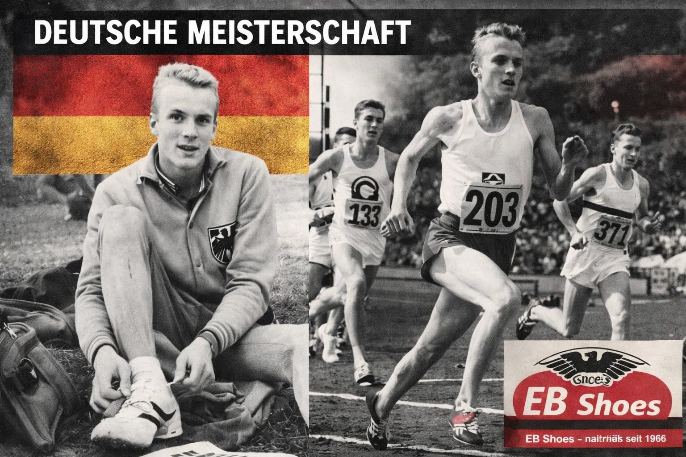
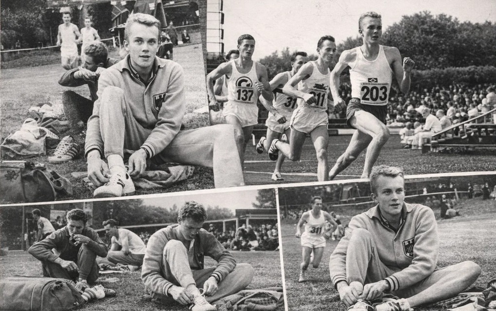

TRANSFORMATION INNENSTADT
DER GROSSE
WANDEL
Wie und mit wem unsere lebendigen Marktplätze gerettet werden können.
Neue Wege für zukunftsfähige Stadtquartiere – kuratiert, mutig, communitygetrieben.

Die „German Angst“
überwinden
Kriege, Inflation, Klimawandel – negative Schlagzeilen belasten die Konsumbereitschaft. Doch statt zu lamentieren, gilt es pragmatisch die Ärmel hochzukrempeln. Internationale Medien sprechen vom Phänomen der „German Angst“. Die Marktverschiebung hin zum Online- und Multichannel-Handel ist eine Tatsache. Aber kein Grund zur Panik – sofern Handel und Immobilienbranche bereit sind, sich mutig neu aufzustellen.
Besucherfrequenz (DE)
Omni-Channel Umsatzwachstum
Nicht beliebig ersetzen, sondern kuratieren
Leerstände lassen sich nicht durch identische Fast-Food-Ketten oder austauschbare Discount-Stores füllen. Es braucht resolut agierende Manager, die Handelszonen verdichten, große Flächen neuen Nutzungen zuführen und lokale Experten einbeziehen. Gute Ideen verwässern oft – daher muss alles aus einer Hand umgesetzt werden.
Revitalisierung durch Stilgruppen & Community
Erfolgreiche Stadtquartiere in Tokyo, Seoul, New York, Paris, Mailand oder Berlin zeigen: Attraktive Erlebnisse entstehen nur mit einer definierten Community.
Zielgruppen ≠ Stilgruppen
„Warum Stilgruppen? Attraktive Einzelhandelserlebnisse erziele ich nicht mit beliebigen Discount-Stores. Eine definierte Community suchen, fördern, stärken – nur dann floriert der stationäre Handel.“
Trendscouts & Citymanager
Kümmerer müssen immer auf dem neuesten Wissensstand sein, Klientel exakt einschätzen, Inhouse-Events veranstalten und in sozialen Netzwerken aktiv sein. Expansion dort, wo Online-Clickzahlen hoch sind.
Pop-Ups & Lifestyle-Stores
Schon wenige Pop-Up- und instagrammable Stores beleben Innenstädte enorm. Gen-Z & Gen-Alpha-Marken starten online und expandieren schnell mit physischen Räumen – Innovationskraft erlebbar machen.
„Durchmischung von trendigen Angeboten und Pop-Up-Stores als Frequenzbringer. Der stationäre Handel muss sich differenzieren, interagieren, Community Building betreiben – ob Nike-Fitnessraum oder Gaming Station. Second-Hand-Läden und nachhaltige Stores sind die Zukunft.“

Authentischer lokaler Handel: Identität & Community-Bindung als Erfolgsfaktor
Starke Marken schaffen
urbanes Miteinander
Lokale Traditionsgeschäfte wie EB Shoes stehen für Authentizität und generationenübergreifende Verbundenheit. Genau diese nahbare Atmosphäre – kombiniert mit neuen Erlebniswelten – bringt die Innenstadt zurück. Schulte-Hillen betont: "Die Förderung einer Community und damit die Belebung gelingt schon durch wenige Pop-Up- und Lifestyle-Stores."
Beispiele: Globetrotter Bonn, Ecoalf im Las Rozas Village (Madrid) – eingebettet in Grünflächen und autofrei. Die Zukunft ist erlebnisorientiert und digital vernetzt.
Innovation erlebbar machen
Omni- & Multichannel
Der stationäre Handel wird zunehmend mit verändertem Verbraucherverhalten konfrontiert. Wer interagiert und auf Augenhöhe kommuniziert, gewinnt.
Second-Hand & Luxus-Resale
Designertaschen zu Schnäppchenpreisen, gut designte Sortimente. Secondhand boomt online wie offline und spricht Stilgruppen an.
Gen Z & Gen Alpha
Marken starten digital und expandieren mit instagrammable Stores. Erlebniswelten wie X-Perion-Fläche von Saturn am Alexanderplatz zeigen, wie junge Zielgruppen ticken.
Erfolgreiche internationale Stadtquartiere
Tokyo, Seoul, Los Angeles, New York, Paris, Mailand, London, Berlin – diese Städte zeigen, wie regelmäßige Anpassung an Stilgruppen und ein Mix aus Erlebnisgastronomie, Pop-up und Community-Hubs funktionieren.
Kümmerer mit Trendscout-Mentalität
Citymanager müssen vor Ort exakte Kenntnisse über Einzugsgebiet und Klientel haben. Nur wer die Community wirklich versteht, schafft magnetische Orte.
Wolf Jochen Schulte-Hillen
Visionär · Berater · Pionier des modernen Einzelhandels
Gründete 1972 SH Selection, Agent & Importeur für Sport- und Modemarken. Später Berater für internationale Shopping Center. Heute arbeitet er an Zukunftsstrategien für Städte, Investoren und Händler in einer digitalen Welt.
Rekordhalter & Ehrenmitglied HSV · Leidenschaft für urbane Transformation
„Der Handel muss sich differenzieren,
als Coach arbeiten und Community aufbauen.“
Schulte-Hillens Credo: Nicht Baukastenkonzepte, sondern individuell kuratierte Nutzungsmischungen, die zu einer Stadt und ihren Menschen passen. Internationale Erfolgsmodelle lassen sich adaptieren, wenn lokale Experten und Eigentümer an einem Strang ziehen. Pop-ups, nachhaltige Stores, Omnichannel-Integration und echte Erlebnisflächen sind der Schlüssel zur Wiederbelebung der Innenstädte.
„Die Anzahl der Pop-Ups wird zunehmen, da immer mehr Gen-Z- und Gen-Alpha-Marken online starten und dann schnell mit physischen, instagrammable Stores anfassbar werden.“
— Wolf Jochen Schulte-Hillen, Transformation Innenstadt: Der große Wandel
Zukunftsfähige Marktplätze entstehen durch Mut, Kooperation und kuratierte Vielfalt – mit Community im Zentrum.